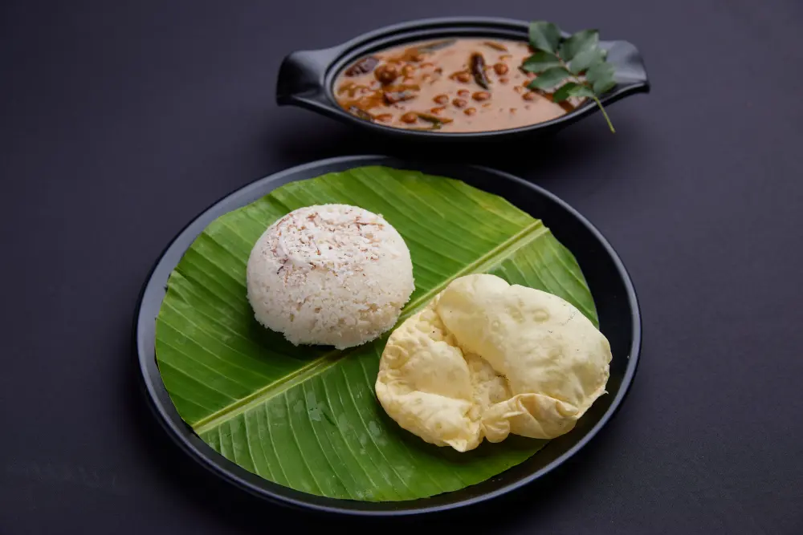

SIMPLE INGREDIENTS. SO MUCH SOUL.THE ONAM WAY
Food that feels
like coming home.
Some flavours need no introduction. The first bite of a crisp dosa. The comfort of puttu and kadala. The joy of a little bit of everything on a banana leaf.
At Onam Veg, we bring those South Indian favourites to your everyday table. Come for a quick breakfast, settle in for lunch, or gather over dinner. There’s always something good waiting.
✳
From Kerala, with love.YOUR TABLE IS WAITING IN CHERTHALA.